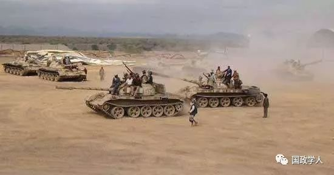
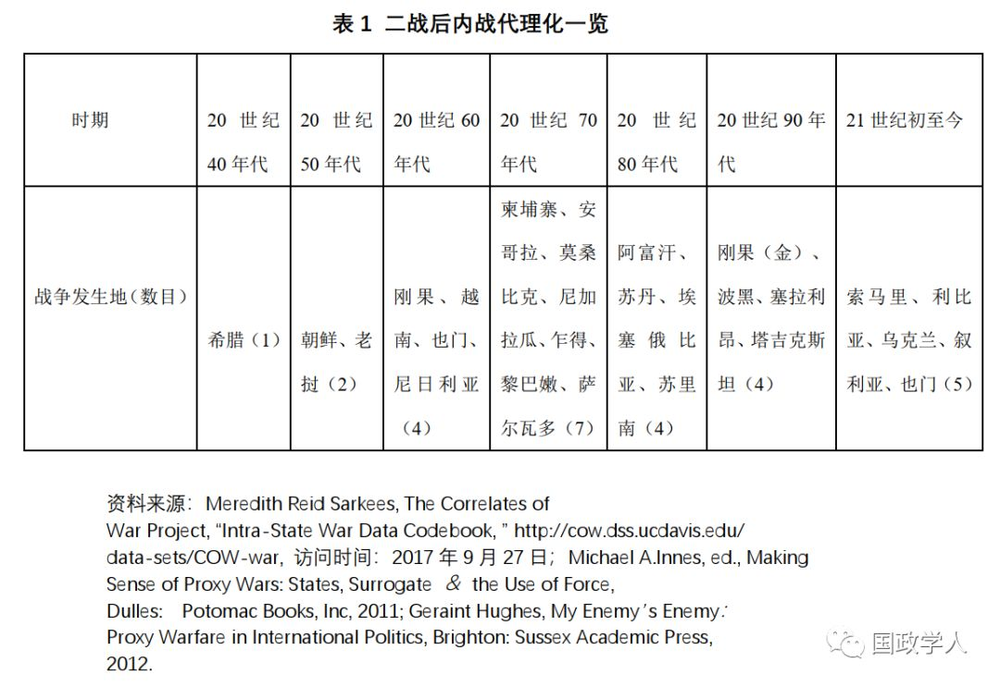
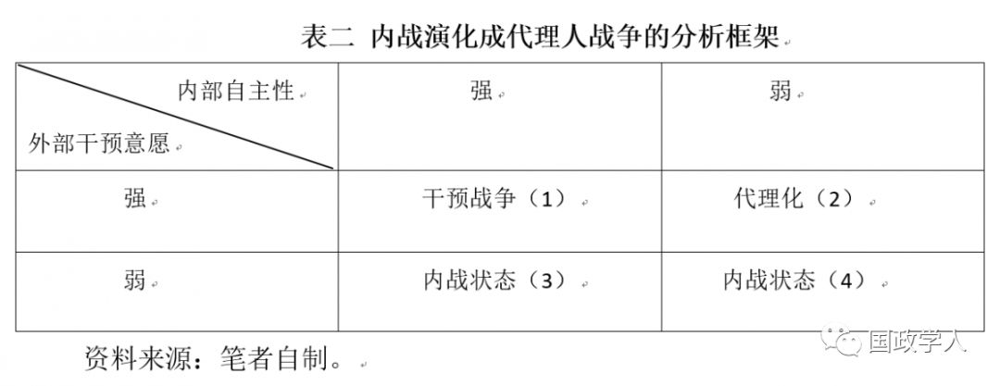

收录于合集

简 介
【 作者 】
陈翔 ，华中师范大学中国周边安全与合作研究中心博士生
【 来源 】
《世界经济与政治》2018年第1期
内容提要
第二次世界大战以后，许多国家国内战争频发，且其中很多内战最终演化成代理人战争。但是有一个值得关注的现象：为何有些内战会步入代理化进程，有些并没有成为代理人战争?为了解决这个经验困惑，需要在对既有研究梳理的基础上，提出有效解释内战演化成代理人战争的逻辑机制，抓住行为主体的动机与能力，从施动方的干预意愿及代理方的自主性两个自变量分析。从内战演化成代理人战争应同时满足两个发生学条件：一是外部施动方要具有强烈的干预意愿，把扶持内战中的代理方作为拓展自身利益的战略方式；二是内部代理方的行为自主性不足促使对外部支持的依赖性加强，把成为代理方作为换取这种支持的路径。从内战走向代理人战争正是施动方与代理方双向互动且高利益匹配度的产物，以上两个条件缺一不可，否则内战代理化难以出现。经过对安哥拉内战的两个阶段(1975-1991年、1992-1994年)这一案例进行内部比较分析，验证了以上假设的适用性。
关键词： 内战；代理人战争；自主性；干预意愿；安哥拉内战

正 文
一 引言
战争是人类政治生活的“常态”，关于战争及其原因的讨论贯穿着世界历史发展的始终。第二次世界大战以后，对于战争惨烈程度的恐怖性记忆以及战争技术的革命性进步，推动着冲突形态与战争模式的历史性变迁。约翰·穆勒（John Mueller）及马丁·格莱沃德（Martin V. Greveld）认为，随着核时代的到来与国家间战争成本的增加，导致国家间特别是大国之间战争的过时与最终消亡。[①]布鲁诺·泰尔特雷（Bruno Tertrais）指出，部分由于国家体系本质及国际秩序的变化，20世纪中后期总体战或常规的国家间战争逐渐减少。[②]的确，二战以来大国间鲜开战端，国际政治呈现出的主要是不对称战争、局部战争以及国内战争。其中，内战成为愈加普遍的战争形态。从“乌普萨拉冲突数据项目（UCDP）”的统计可看出，在1989—2008年间，总共发生128场冲突，其中只有8场是政府间的国际冲突，120场是发生在一国政府与反政府武装之间。[③]特别值得注意的是，一系列内战或国内冲突掺杂着大国与邻国介入的背景。1946—2001年全球共有163场国内冲突，其中32场有外部国家参与其间。[④]
内战外溢的重要表现是其演化到代理人战争，这在二战以后的国际政治中频出。从冷战时期的希腊内战、老挝内战、黎巴嫩内战与尼加拉瓜内战，到冷战结束后的刚果（金）内战与波黑内战，再到当前的乌克兰内战与叙利亚内战。例如，在冷战时期发生的30场战争中，其中有内战演化而来的有18场，所占比率为60%。[⑤]与此同时，有些内战并没有演化成代理人战争，比如冷战初期的中国内战以及20世纪60年代以后的缅甸内战。始于1983年的斯里兰卡内战，尽管曾经有过印度泰米尔族经济及军事援助斯里兰卡反政府武装猛虎解放组织（LTTE）的经历，并没有走向代理人战争。[⑥]2002—2003年造成近5000人死亡的科特迪瓦内战也没有步入代理化。虽然1970—1975年的柬埔寨内战演化成中美苏越等国参与的代理人战争，1996—1998年的柬埔寨内战却没有代理化。那么，为何一些内战最终演化成代理人战争，一些内战并没有被代理化？这这其中的差异性与机理值得探讨。[⑦]
本文要研究的问题不是内战发生的原因，也并非一般代理人战争爆发的条件，而是解释内战为何会走向代理人战争这个国际关系现象。为解答这个问题，本文在考察已有研究成果的基础上，通过对经验事实的把握与归纳，提出替代性解释。先是搭建出内战代理化的理论分析框架，提出可供检验的因果假设，构建具有通则意义的内战演化成代理人战争的一般性机制，指出内战走向代理人战争是施动方干预意愿与代理方自主性这两个关键自变量共同作用的结果。文章最后选取安哥拉内战这个单一案例的内部变化进行比较验证。
二 文献回顾
内战与代理人战争是两类性质与指涉不同的战争类型，学界对于这两类战争尤其是前者的研究逐渐丰富。但对于内战与代理人战争之间逻辑关系的研究成果并不多，对于内战代理化问题的讨论尤其少之。通过梳理，可以发现内战与代理人战争关系的已有论述主要体现在以下几个方面。
（一）内战行为体推动内战走向代理人战争 ****
内战的爆发出于政权争夺、民族分离、经济纠纷或者意识形态歧异等，参与方之间博弈具有一定零和性，且政府与反叛组织在实力上存在着不对称性。[⑧]为此，战争行为体主动引入外部力量，加强己方实力以提高战争胜率，在这个过程中形成施动—代理关系，从而使得内战走向代理人战争。比如，乌克兰政府积极呼吁西方国家介入其内战，就是考虑扩大自身权力，维护自身安全。[⑨]阿兰·米兰特（Allan R. Millete）研究了朝鲜战争，认为这场内战的主角是左翼与右翼的朝鲜人，其权力争端是内战走向大国代理化的关键起因。具体来说，北朝鲜金日成政权认为可以依靠军事力量解决朝鲜半岛国家政权的统一，在内战中溃败的南朝鲜李承晚政权借助美国的帮助反击，使得北朝鲜寻求苏联与中国的庇护，最终演变成一场美苏间的代理人战争。[⑩]布伦丹·索泽尔（Brendan Sozer）的观点与此类似，指出国内军事组织的相对实力等是代理关系形成的主要因素之一，依靠外部支持者实现国内力量的均势甚至优势。他以黎巴嫩内战为例，指出长枪党武装、什叶派武装（以真主党为代表）等国内军事派别寻求以色列、叙利亚及伊朗等国的援助，以期在内战中获胜。[11]总之，现有研究把内战行为体寻求外部支持的目的归结为改变力量对比，目的是希望变更战争进程及控制战争结果。有研究指出，内战之所以导致国际冲突，是由于外部力量被引入，而内战行为体的动机是希望通过干预战略及外部化控制战争结果。[12]
（二）外部干预者助推内战演化成代理人战争
外部干预是内战代理化的重要动因，外部施动方在推动内战走向代理人战争方面角色显著。罗英杰指出，代理人战争是大国政治博弈的产物，大国的介入是推动代理人战争的最重要因素。[13]既有研究认为外部国家介入内战有着两方面考量：一是机会主义窗口，即内战提供一种机会场合增进自己的利益，通过干预内战获取相应的物质与精神回报；二是风险规避意识，即干预内战旨在降低安全威胁及终止己方预期损耗。外部国家基于机会主义收益寻找满足其需求的行为体并加以扶持与资助，从而互动成施动—代理关系。迪伦·鲍尔奇·林赛（Dylan Balch- Lindsay）等认为，内战为第三方提供追求其国家安全利益的机会窗口，或开发内战国家的自然资源，或通过支持内战一方弱化潜在的竞争对手。[14]外部行为体干预一国内战寄希望于谋取物质利益及汲取经济资源，为此需找到合适的代理人并促成内战代理化。[15]纳达夫·萨夫兰（Nadav Safran）的研究对象是20世纪60年代的也门内战，认为沙特与埃及的地区博弈对于这次战争的代理化有着特殊意义。在他看来，1962年开始的也门内战是沙特与埃及的意识形态对抗与权力政治竞争，沙特向也门王室军队提供各种经济与军事援助，埃及派兵援助也门共和政府，地区大国的战略博弈是这场代理人战争的主要动因。[16]当前伊朗与沙特在中东地区的代理人竞争，也是学者关注的热点话题。[17]
相关研究还表明外部施动方的风险规避与其干预内战行为有着密切联系，外部干预者介入内战希望通过找到恰当的代理人减少风险损失以及降低获取收益的相应成本。狄隆·格罗（Tyrone L.Groh）直言，一国政策制定者通过寻求代理人为己分担成本与风险。[18]雅克布·加斯曼（Jacob D. Kathman）指出，外部国家插手别国内战，是权衡这种内战传染的可能性及风险。[19]还有学者以叙利亚内战为例，认为代理人方式可以便利及低风险地实现外交目标，对于发起国来说不会招致直接军事干预带来的财政与人力消耗。[20]
（三）内外联动推进内战迈入代理人战争
有研究通过综合的路径，提出内战的代理化进程是内战行为体与外部干预方联动的产物。目前，已有学者对国际政治中的内外联动现象进行了相应论述。[21]内战与大国干预具有联动效应，二者的互动使得内战走向代理人战争，这在既有文献中有所论述。事实上，很多内战本身就并非仅限于国家内部范围。有学者在分析分离冲突的起源问题时，就指出一国内部冲突是该国权力主体与外部干预共同作用的结果。[22]同样，现有研究指出内战代理化也是这种内外两个主体共同作用的结果。代理人战争的发生一方面是作为施动方的大国竞争，内生诱因是代理方的社会政治及民族宗教等问题。[23]杰拉德·普吕尼耶（Gerard Prunier）探析了刚果（金）内战演进成代理人战争的进程，认为反政府武装需要来自外部的支持赢得内战的成功，邻近国家苏丹与乌干达借助第三国内战进行政治与军事对抗。[24]在波提尔·达纳（Bertil Dunér）看来，国内代理方与外部大国物质利益的一致性推动着后者卷入一国内战。[25]还有研究深入到内外联动的内核，认为民族宗教纽带、经济联系、意识形态关系等推动着施动方—代理方利益与政策共同体的形塑。[26]
应该说，以上研究从各自视角分析了内战向代理人战争演进的逻辑，指出了内外行为体基于不同利益偏好的行为选择是内战代理化的主要因素。尤其是意识到内外行为体的联动对于内战演化成代理人战争中发挥着重要作用，这些研究在很大程度上得到理论推演与经验现实的反映。这对于我们进一步把握内战代理化有着重要的理论指导价值，对于深入理解该问题有着很大启发，特别是以行为体作为切入点可以更直接地抓住问题的本质。当然，既有研究也存在着相应的不足之处。前两种解释路径把内战演化成代理人战争的原因简单归结为内部行为体或外部干预者，没有重点考察两者的互动。同时，内战代理化本身指涉外部施动方与内部代理方两种行为体，只归依为单一行为体在理论上不能做到很好的逻辑自洽。第三种解释路径看到了内战演化成代理人战争是内外联动的结果，但没有提炼出关键变量及搭建出作用机制，只是简单的现象描述与历史推演。因此，尽管现有研究对于我们理解内战演变成代理人战争的动力机制有着重大价值，但是既有成果存在着简单化机制的问题。本文在已有研究成果基础上，试图构建出内战演化成代理人战争的逻辑机制。
三 施动方干预意愿、代理方自主性与内战代理化
二战以后，国际政治中呈现出较为明显的“内战外打”现象，即一个国家发生国内冲突或内战时，其他国家通过支持某一方介入战争进程。内战难以被限定在国家疆域之内，主动或被动地外溢到边界以外的区域。[27]克里斯蒂安·格里蒂奇（Kristian S. Gleditsch）指出，内战不仅仅取决于一国内部特性，还因与其他国家联系密切程度有着根本差异。[28]其中，从内战演化到代理人战争或内战代理化进程成为内战外溢的重要表现形式。本文重点考察的是内战代理化的动力机制，阐释是何种因素导致内战演化成代理人战争。
（一）概念操作化
对内战、代理人战争及内战代理化等概念进行明确界定与操作化十分重要。内战是在一国领土范围内由于不同层次的行为体基于目标的不相容性与利益的互斥性出现的冲突状态，且这种冲突必须达到战争规模。戴维·辛格（David Singer）把战争规模的标准界定为“年均至少有10000人以上参战或1000人以上在战斗中死亡”。[29]在此基础上，他与梅尔文·斯莫尔（Melvin Small）认为内战是发生在一个国家内部、有本国政府积极参与以及双方有效对抗的军事冲突。[30]其中，内战中的“政府”包括国家军队、地方警察以及以政府名义陷入冲突的公民。[31]
代理人战争作为一种间接战略（indirect approach），通常指实力强大的大国或邻国不直接参与，而由其代理国或者国内代理方参与的战争。卡尔·多伊奇（Karl W. Deutsch）认为代理人战争作为贯彻外部力量实现战略目标的工具，是国内冲突的双方充分利用人口潜力、资源及领土进行的战争形式。[32]杰兰特·休斯（Geraint Hughes）指出代理人战争是非国家准军事组织从外国政府直接获取援助且与现政府发生冲突的一种战争形式。[33]代理人战争有三个基本要素：施动方（activator）与代理方（proxy）之间有特定关系，且需要行动协调，交换情报，供给资源如军事援助、作战训练及顾问；大国的目的是影响事件同时避免直接干预及对冲突负责；大国提供军事援助给代理方推进战争朝着有利于大国战略利益的方向发展。根据代理方为国家或非国家行为体，可把代理人战争分为国家代理人战争、反对派代理人战争、非国家行为体代理人战争、雇佣军代理人战争以及“混合型代理人战争”等。[34]本文研究主要涉及反对派代理人战争，即军事支持发生内战国家的中央政府或反叛武装。
对于代理人战争的把握，需要与一般的外国军事干预做出区分。应该说，代理人战争是军事干预的一种形式，但二者有着明显的差异。首先，代理人战争是外部国家利用当地行为体而非自身的力量采取军事行动，军事干预通常是外部军事力量直接进入目标国家且参与战斗行动。弗里德里希·皮尔森（Frederic S.Pearson）指出军事干预通常意味着军队或武装力量的介入到其他国家的内部冲突。[35]其次，代理人战争一般是代理人与施动方基于利益同构之上的行为一致，二者共同协商形成共识或达成默契，代理方维系施动方的利益，施动方保护代理方的利益。二者相互合作，并非一方强迫另一方。代理行为是一种自愿行动，不意味着被施动方利用，应是双方共同获益。[36]施动方与代理方关系建立在互惠基础上，前者使用资源提供保护及经济军事援助，换取后者在前者要求下采取军事行动。[37]军事干预是外部力量的直接军事干涉行动，可能不一定是国内行为体（准代理方）主动要求的行为，双方的利益与意志可能会发生冲突。
应该说，战后代理人战争的频仍是多种因素作用的结果。战后国际规范不断发展，导致依靠武装征服扩张领土的行为过时。[38]如在美国看来，直接军事干预将摧毁美国对第三世界国家政策的公信力，会激起全世界的一片谴责声。[39]同时，厌恶战争与追求和平的战后舆论是大规模冲突及直接军事侵略的掣肘因素。查尔斯·蒂利(Charles Tilly)指出，现代战争的重要趋势包括战争破坏性急剧加深以及民众反战情绪不断增长。[40]尤其是核武器的出现及核时代的到来，相互确保摧毁（MAD）使得大国避免直接冲突成为一种不言自明的战略默契。[41]菲利普·托尔（Philip Towel）认为，采用代理人战略对于阻止拥有核武器的超级大国在战争中直接冲突很关键，非常有助于减少总体战爆发的可能。[42]
通过对美苏冷战史的简单梳理，可以发现代理人战争是双方对抗的重要形式。冷战期间，美苏在非洲、东南亚、中美洲和世界其他部分相遇或冲突，主要是由代理人进行。[43]20世纪50年代，把代理人战争描述为“世界上最廉价的保险”的美国总统艾森豪威尔提出大规模报复战略，这种核讹诈给苏联行动带来巨大战略压力的同时，也使得双方都不敢贸然直接发生冲突，代理人战争成为替代性选择。例如，1953年老挝内战爆发，美国认为老挝有共产主义化危险，把其作为东南亚条约组织的保护国及“反共堡垒”，向老挝右翼的诺萨万（Phoumi Nosavan）将军提供AT-6型战斗机等先进武器对付国内的中左翼势力，苏联联合北越从河内空运军需物质给共产主义的巴特尞（Pathet Lao）。到了20世纪60年代后期，美苏两国基本上达成大致的战略平衡，苏联赢得对美国的战略均势。1969年，美国拥有洲际导弹1054枚，潜艇发射导弹656枚，远程轰炸机540架；苏联则分别拥有1200枚，230枚和150架。[44]这在一定程度上可以更好地解释为什么在20世纪70年代到80年代中期苏联对外扩张的加快及美苏紧张关系的加剧并没有引起两国的全面战争。但是双方在这个阶段代理人战争的频次很高，成为双方竞争权势的集中表现。[45]
可以说，代理人战争是国家间接冲突的重要战略，无须军事力量的直接碰撞，目的是维持或改变国家权力平衡，并成为一种利益最大化与风险最小化的理性选择。原本发生在一国内部的战争，最终演化成有外部参与的代理人战争是这种理性选择的结果。内战代理化，顾名思义就是一国内战演变成代理人战争的过程。内战走向代理人战争的标准如下：一是内战方得到外部国家的实质性支持（政治外交声援、经济后勤以及军事援助等），战争出现国际化（internationalized）倾向。内战中的代理方与外部国家在共同对付同样威胁时的利益一致，代理方维持与实现外部国家利益的同时，从后者获取各方面支持。双方共同承担战争的政治与军事责任，施动方必须奖励代理方，报酬应该显示代理方的战争贡献。二是外部国家并没有接管或直接参与战争，战争一方或双方仍然是内战方，一旦出现直接参战就变成“超国家战争（extra- state war）”甚至是国家间战争（inter-state war）。[46]施动方支持内战中的一个代理方打击另一方，是利用第三方的间接冲突，不希望直接冲突，施动方必须确定能够控制代理方使事件不能朝不可预想的结果发展。据此，可以找出二战以后内战演化成代理人战争或内战代理化的具体战争数据集。（见表一）
 事实上，直接干预或入侵他国有着多种风险，包括国际不正义、太耗费（政治、财政及物质上）、外交非法性、国内反对及国家间直接战争乃至核大战等。国家间外交演绎中最后的语言只能是国家利益，围绕着国家的物质与精神诉求展开互动，这是所有国际关系命题的原点。参与国在共同利益所涉及的问题领域内是一荣俱荣或一损俱损的。[47]分析内战代理化的动因，需要综合考察施动方与代理方的利益一致性及利益匹配度。利益趋同对于施动—代理关系的作用，就如同共同战略利益的存在对于联盟的维持有着重要意义。[48]如果二者利益高度一致，有利于代理关系的形成；如果有着较大利益歧异，代理关系形成就会不畅。正如波提尔·达纳所言，代理化介入并非是干预方独自利益的展示，而是干预方与代理方有着共同利益或利益兼容使然。[49]从内战演化到代理人战争，应该是作为外部施动方与内部代理方预期利益认知的结果，施动方干预内战的意愿以及内部代理方对外部支持的需求共同作用的产物。具体地说，内战代理化的过程要同时满足两个发生学条件：一是外部施动方有着介入内战的强烈意愿；二是内部代理方自主性弱及其对于外部支持的刚性需求。
（二）外部施动方干预意愿
对于发生内战的国家，外部国家是否采取代理化的干预政策取决于对自身利益的认知判断。有学者指出，第三方介入内战的动机是自我利益导向，有着多重偏向以及战后联盟形成的诉求。[50]约翰·纽曼（John von Neumann）认为行为体可以根据客观环境及已有信息对现实做出理性抉择，提出最优方案，其基本内涵包括理性预期、风险规避与效用最大化。[51]外部国家干预意愿受限于对预期收益及风险规避的理性盘算。第三方干预内战国家，是因为后者战略重要性及从干预中可以获取未来利益。[52]国家对外决策会受到未来风险性及不确定性的干扰，存在着对不干预带来潜在损失的担心。事实上，采取干预政策可以获取政治外交、军事安全、经济商业等方面的收益，这种预期收益会推动外部施动方的代理化偏好。
预期收益的政治外交层面体现在扩大影响、权力抵消等。外部施动方通过内战中的代理人扩大在对象国的政治影响，以间接的方式改变战争进程并试图影响内战的结果，能够以较低的风险实现自己的战略与政治利益。事实上，外部势力的介入本身构成内战演变方向和发展动力的关键因素之一。[53]雅克布·加斯曼指出，第三方介入内战可能是立足于维持政府现状且试图扩大内战国家政府权威或者通过支持反叛组织重塑政治权威结构。[54]在叙利亚内战中，伊朗大力支持阿萨德政权是希望什叶派政府的稳固以及伊朗影响力的延续，沙特则积极援助叙利亚反对派和革命力量全国联盟的目标是寻求亲沙特的逊尼派势力执政。一定程度上，国家支持内战中的反对派（或称为平衡方），目标是降低对方的影响力。[55]外部施动方希望己方资助的代理人能在内战中维持均势甚至达到优势，使内战不偏离于己方期望的轨道。代理人战争对于那些试图改变权力均衡并扩大自身影响的国家来说，是一种有意义且有吸引力的选项。[56]达到分化与瓦解对手联盟，增加自身的权力地位也是干预者考虑的要点。[57]
外部施动方依托代理人介入内战还希望达到权力抵消的目标，特别是介入内战的国家间互动可能是冲突型并形成竞争网络，为各自希望的内战结果相互对抗。很多情况下，外部施动方介入内战是为了反对存在竞争关系的另一个干预者，这本身是一种制衡干预行为，以抵消其他行为体的干预努力。在波黑内战中，南联盟对塞族武装的支持很大程度上是对冲克罗地亚对克族武装援助的努力。在迪伦·鲍尔奇·林赛等学者看来，弱化竞争对手的实力是第三方介入内战并支持其中一方的重要出发点。[58]外部干预的目标是对象国的政治权威，期望变更该国政府与反政府势力之间的力量平衡。[59]同时，通过干预在某种程度上推动干预者之间的权力相对均衡。在冷战时期的美国看来，帮助亲苏国家的反苏叛乱力量会使现政权不稳，目的是在零和博弈中维系或改变地区及全球权力均衡。[60]
预期收益的军事安全层面体现在保持本国安全、增加军事投射点等。内战与本国的安全有着密切联系，特别是地缘毗邻性导致内战容易外溢到邻国，增加了外部干预的意愿与机会。[61]施动方采用代理化介入的间接制衡方式，向代理方提供武器、军事训练、顾问等支持，同时远离或看起来远离战争状态，实现己方风险最小化，可把战争限定在局部空间内，不至于危及本国的地缘安全。格雷·卡什曼（Greg Cashman）指出，内部冲突可能对他国带来安全威胁，通过支持政府减少不稳定性，保护受险群体，或者阻止具有危险的政治组织执政。[62]采取代理化而非正式参战可以避免国际社会反对及国家间直接对抗。在刚果（金）内战中，卢旺达、乌干达、安哥拉、津巴布韦等国各自支持内战一方，防止战争外溢到同样有着复杂种族与权力之争的本国。[63]外部施动方还希望扶持内战的代理方，为本国军事力量投射寻找立足点及延展辐射空间，增加军事安全的外延利益，并可达到制衡对手或潜在对手之功效。在叙利亚内战中，俄罗斯极力维系阿萨德政权，重要动机是继续控制具有地缘战略价值的塔尔图斯港基地，其是俄罗斯维持在地中海地区影响力甚至南出印度洋所不可或缺的。[64]扩大军事辐射空间可以在军事上制衡地区或全球竞争对手。在1979—1989年的阿富汗战争中，美国以伊斯兰圣战组织作为战略抗击喀布尔政府及其庇护者苏联的重要支点，后者的实力在这个“帝国坟墓”中受到极大跌损。[65]
预期收益的经济商业方面包括汲取自然资源、销售军工产品及挖掘潜在投资场所。内战国家如果有着丰富自然资源，外部施动方会寻找代理人为己提供资源。事实上，潜在干预者会根据资源等要素仔细考虑站在战争的哪一边。[66]大国、地区强国或邻国想要干预分离运动总是能够找到“合适的”借口，其中就包括自然资源分配。[67]在塞拉利昂内战（1991—2002年）中，尼日利亚、几内亚与利比里亚分别支持塞拉利昂政府军与“革命联合阵线（RUF）”，其中重要原因是这个国家拥有丰富的钻石资源。对于外部施动方来说，内战国家是新式武器的良好试验场，通过向各自代理人提供军工产品，拓展武器销路，大发战争财。同时，施动方借助代理人的战场实践与宣传效应，可以吸引更多的军工客户。例如，美国的“陶”式反坦克导弹在阿富汗战争中取得不俗战果，后受到沙特等中东国家的大加青睐并不断采购。外部施动方还着眼于介入国家的战后重建进程，通过让己方支持的代理人掌握或影响战后的政治结构，促进本国商业与投资活动的开展。事实上，刚刚经历内战的国家重建任务艰巨，外部干预者可以通过与代理人原先的密切关系为自己的经济事业创造有利的条件。
除了预期收益外，施动方以代理化方式介入内战，还考虑到资源耗费、控制成本与承诺义务等直接干预成本。追求利益最大化要顾及其中的成本问题，总体上来看，代理化干预内战的成本更低。外部施动方直接干预内战不仅会消耗大量的物力与财力，还会带来相应的人员损失，这会增加国内观众成本，影响政策连续性与政府稳定性。通过代理化的方式参与内战，不用直接派兵，仅仅提供后勤等方面的资助，可以实现既定目标。克里斯·洛夫曼（Chris Loveman）直言，代理人战争是国家寻求深化其战略目标，同时避免卷入直接、耗资及流血战争的替代形式。[68]以越南战争为例，1961—1965年，美国通过出钱、出武器、出顾问、训练当地军队镇压北越支持的南方民族解放阵线。1965年，美国直接派军参战，伤亡惨重后再到20世纪70年代初用越南人打越南人的战争越南化，历经代理化—直接参战—代理化的过程。
代理化方式还可以减少直接干预所带来的控制成本，通过把代理人作为应对冲突的当地力量，降低内外两方面可能存在的对干预行为的抵触，并最终实现施动方的战略目标。在施动方看来，反叛组织对于当地的情况熟悉，支持其使得干预更具合法性，并对于占领力量的抵抗最小化。[69]另外，作为管理盟友关系的工具，承诺义务在维系安全合作中意义重大。直接干预的安全承诺在深度上大于代理化方式，但可能导致出现大国直接冲突或一方深陷内战泥潭的困境，承诺义务则可以避免冲突升级与深度卷入，毕竟代理化方式介入内战的承诺可信度与约束力并非如此清晰与强烈，施动方易于抽身出来。施动—代理关系不像正式的同盟关系，约束力并不是很强，具有相应的灵活性与可控性，减少了联盟政治中常见的“连累”问题。[70]
需要指出的是，施动方干预意愿本身受到多重因素影响，涉及干预规范、战略重要性、族群宗教纽带、价值观念、大国竞争等。不干涉原则的国际规范始终作用于国家干预意愿，施动方缺乏确保军事行动的合法性，对规范的强调及贯彻程度推动着国家采取更为隐蔽的代理化做法。内战国家对于施动方的战略重要性是一个变量，与上述提到的预期收益有着关联，当然这个重要性并非固定不变，随着大国竞争演绎发生相应变迁。身份认知是施动方与代理方之间的纽带，在一定意义上，愈强的跨国族群、政治与经济联系带来更大程度的外部干预意愿。[71]施动方干预意愿受到价值观念的影响，体现在倾向支持与自己有相似意识形态、宗教信仰的政治军事实体。周亦奇认为，外部支持国带有自身理念，其支持对象只会是与其理念相符的反对派武装。[72]大国竞争烈度影响大国的利益认知，一方的干预会引起地区或全球对手针锋相对的行动，大国竞争的烈度越强，间接制衡的意图就会越显著。[73]大国博弈烈度与内战代理化某种程度上呈现正相关，美苏竞争激烈时期的代理人战争比例上升，但在20世纪80—90年代下降。有学者指出，两极格局下美苏两个超级大国通过代理人追求各自的战略与意识形态目标而引起多场内战，冷战结束后内战数量呈现下降趋势。[74]可以说，外部干预意愿是利益算计的决策过程，外部干预追求效用最大化与风险最小化，并要顾及相应干扰因素，决定了强式意愿与弱式意愿，外部施动方干预意愿与代理化行为呈现着明显的正相关关系。
（三）内部代理方自主性
外部施动方的干预意愿是内战走向代理人战争的一个方面，还需要考察内战行为体的政策取向。内部代理方的自主性是关键变量，决定着内战行为体对外部力量及干预行为的政治态度与政策选择。自主性是指对于自身政策的把握度以及对于外部支持的依赖度，突出表现为是否听命与服务于国外行为体。自主性包括意图与能力两个方面，意图是自主性的外在形式，能力决定自主性的强弱水平。自主性作为一种主观动机，受到行为体本身能力的限制，是行为体偏好意图与实际能力的结合。代理方必须有着充当代理人的动机与能力，其在战争结果的利益上与施动方高度兼容。施动方与代理方是等级式关系，代理方将自身利益服从于施动方的利益，因为其无力独自行动。[75]但是，这并非意味着代理方无自我利益或纯粹是为了施动方利益采取代理行动。代理方要实现自身的既定目标，并非是雇佣力量，而是积极借助施动方的力量在政治上旨在改变内战国家的国内权力结构。代理人具有足够的实力不需要与别国捆绑在一起，以防止成为他国政策的附属品。这其中存在着一种交易机制，放弃一定的自主换来安全。自主性与依赖性相伴相生，内部行为体对外部支持的需求度及依赖性与行为体自主性有着密切关联。[76]卡尔·克劳塞维茨（Carl von Clausewitz）直言，“实力限制得越多，目标必定限制得越多”。[77]行为体的自主性决定着对外依赖程度，作用于行为体充当代理方的限度，从而影响内战是否走向代理人战争。
行为体的自主性主要受到内战主体力量对比的制约。通常，内战国家的政府及反政府武装的绝对或相对能力不足，会寻求外部支持，政策自主性随之降低，对外部依赖就会越强烈。[78]反政府武装与政府之间能力分配存在着不对称性，这本身是内战中行为体政策行为的有力源泉。[79]就政府而言，这种能力短缺的重要体现是获取国内社会支持的水平不足或下降，导致更多的对抗与暴力活动。[80]但是，内战中行为体更为关注的是相对实力变迁，或者是各方之间的实力对比。研究表明，弱国自助能力与同盟解体存在着正相关性，自助能力强弱是联盟分合的重要自变量。[81]不对称关系中的强者一方一般来说不希望更多的外部力量干扰，弱势一方追求借助外部力量平衡不对称结构，形成内战各方的不对称性需求。这是因为制衡行为的前提是不对称性可能给弱势一方带来潜在损失或威胁，尤其是在弱势一方无法确定随着强势一方实力的不断增长是否会威胁自己利益的情况下。[82]更高的自主性在逻辑上表明更少的外部干预。如果代理方非常依赖干预国家，没有这种支持不能达到任何目标，这种高水平的依赖要求干预国家提供更多的资源。一定程度上，独立性等同需要更少的支持，同时意味着代理方将不会把重点放在保证干预国家满意方面。[83]
力量对比指涉内战两方面的行为体——政府与反叛组织。掌握政权带来资源汲取能力较强使得政府在内战初期与反叛组织通常具有实力的不对称性，政府拥有更强的社会动员能力。在这种情况下，弱势的反叛组织会避免与更为强大的政府直接打仗。[84]原因在于，多数反叛组织不能克服自身的权力劣势。[85]影响反叛组织的重要决定因素是反叛组织相对于政府的能力。[86]反叛组织要取得权力对等甚至权力优势，在内部资源整合有限的情况下，[87]就要寻求外部支持，以改变不对称性。杰夫·古德温（Jeff Goodwin）认为政府军的实力愈强，反政府武装独自生存的概率越低，对于联盟的需求随之升高。[88]政府要阻止反叛组织的均势化努力，试图以更大的不对称权力关系战胜反叛组织，重塑国内政治秩序。菲利普·赫尔特奎斯特（Philip Hultquist）指出，反叛组织的优势地位使得要维持国家统治的政府采取相应措施控制领土。[89]其中的措施就包括同样引入外部力量对反叛组织及其外部庇护者的干预进行相应制衡。以始于1979年的萨尔瓦多内战为例，面对苏联与古巴对法拉本多·马蒂民族解放阵线（FMLN）的大规模援助，萨尔瓦多军政府更为倾向于依赖美国的支持，以期实现国内力量对比的平衡。外国援助带来政府相对能力的恢复，也会提升政府与反叛组织讨价还价的能力。[90]
除了力量对比这个主要因素外，自主性还受制于合法性地位及民族特性等。政府与反叛组织是本质上不同类型的行为体，代表着不同的身份集团。[91]内战的爆发本身有着多重原因，其中包括资源与利益分配不均带来的政权合法性危机，反叛组织的形成与发展在一定程度上就是要同现政权竞争合法性，以取得稀缺性且难以共享与分割的权力地位。无论反叛的主要目的为何，反叛本身即对政府的合法性形成了军事挑战。[92]在国内，内战行为体要有效回应及满足民众的基本需求，为稳定或夺取政权奠定合法性基础。在资源自给能力不足的情况下，通过依赖外来支持且充当代理人的方式获取相应援助。得到第三方支持的反叛组织以更有力的军事手段挑战政府，并通过提供竞争性的物品与服务促进反对派获取更多的国内民众支持，增强赢得内战最终胜利的能力。[93]与此同时，过多的对外依赖及外部干涉会带来合法性危机，在一定程度上影响民众对政府或反叛组织代表本国利益的看法。[94]事实上，外国干涉与国家自主性存在着结构性冲突。[95]内战国家的民族特性影响行为体的自主性，有着悠久民族独立意识的行为体一般对于外部依赖有些保留，充当代理人的意愿会受限，对于外部干预较为敏感且更多工具主义地应对外部介入。中国的国共内战没有走向代理人战争，与内战行为体尤其是中国共产党对民族独立性的强调有关。
总之，行为体的自主能力是指把自己的意志与诉求转化成利益现实的水平，自主性是独立于国际社会其他行为体自行决定其内外事务。自主性强弱与对外需求有着相关性，对外需求的程度与性质决定对外依赖的敏感性与脆弱性，对外需求具有一定的可替代性，这样可以降低对外依赖的敏感性与脆弱性；对外需求具有刚性特征，对外依赖的敏感性与脆弱性比较强。行为体自主性受到行为能力的限制与权力对比的作用，作用于施动—代理关系的形成过程。内战参与方的实力差距大小影响着自主性强弱，实力差距越小，参战方对于战争胜利前景的预期趋低。行为体自主能力的强弱很大程度上决定着其是否会成为代理人以及内战走向代理化。二战前夕的西班牙共和政府面临德意法西斯武装的强大叛军，处境艰难转向苏联的援助；二战结束后希腊王国政府自助能力有限，只能依赖英美的外部支撑抵抗希腊共产党。[96]行为体自主性弱，对外需求规模大，可替代的产品或对象国少，政策空间有限，对外部依赖通常就强，借助外部力量的动力与机会大，内战代理化的可能性越大；行为体自主性强，对外需求规模小，有较为灵活的政策空间，对外依赖性弱，借助外部力量的动力与机会就少，内战代理化可能性较低。
内战代理化是内外联动的产物，是施动方与代理方基于共同获益之上的战略契合。众所周知，国际体系是无政府状态；国家是理性行为体，利益最大化是国家对外行为的基本动力；国家在寻求权力与利益的过程中，常常需要借助外部力量。通过以上分析，我们可以得出这样的基本结论：内战演化成代理人战争是外部施动方干预意愿与内部行为体自主性两个变量共同作用的结果。（1）如果施动方干预意愿强烈，但是内部行为体自主性强且对外需求弱，这样内战演化成代理人战争的概率较低，一般会呈现外部力量的干预战争状态；[97]（2）如果施动方干预意愿强烈，同时内部行为体自主性弱且对外需求强烈，内战演化成代理人战争的概率较高，呈现为内战代理化状态；（3）如果施动方干预意愿较弱，内部行为体自主性较强且对外需求不强，那么内战演化成代理人战争的概率较低，依然呈现单纯的内战状态；（4）如果施动方干预意愿较弱，同时内部行为体自主性较弱且对外需求强，那么内战演化成代理人战争的概率也会很低，呈现一般的内战状态（见表二）。

四 案例检验
理论是以实际观察为基础，且能够被经验事实所验证。为了验证以上结论，本文选择安哥拉内战的两个阶段作为案例。选取这个案例的原因有以下几个方面：首先是具有可比性。比较研究的对象越相似，也就越容易分离出造成研究对象之间差异的那些因素。[98]相同点是比较的基础，差异性是比较的价值，宗旨是找出差异的原因所在，采取“最大相似原则”进行设计，可以清晰地寻找到哪些因素导致特定差异性的发生。其次，这个案例具有代表性，有着广泛的适用性与推广性。安哥拉内战的第一个阶段（1975—1991年）在叙利亚内战、乌克兰内战中均有体现，安哥拉内战的第二个阶段（1992—1994年）类似于南苏丹内战、摩尔多瓦内战等。再次，通过案例比较，能够有效地考察何种情况下内战演化成代理人战争，何种情况不会走向代理化。安哥拉内战的两个阶段，在前一个阶段走向代理人战争，在后一个阶段并没有代理化，可以在案例内演变（within case variation）考察这其中的差异。最后，采用单一案例不同阶段的比较分析，通过过程追踪法，可以有效控制背景条件，减少不必要的干扰变量，对比分析不同阶段变量变化产生的影响。
安哥拉位于非洲西南部，面向大西洋，背靠刚果（金）、赞比亚、博茨瓦纳与纳米比亚等国。安哥拉原是葡萄牙殖民地，20世纪60年代开始掀起独立运动，并先后出现三支民族解放组织——安哥拉人民解放运动（简称“安人运”，MPLA）、安哥拉民族解放阵线（简称“安解阵”，FNLA）与争取安哥拉彻底独立全国联盟（简称“安盟”，UNTIA）。1974年葡萄牙发生“康乃馨”革命后，新政府与安哥拉三个民族解放组织在1975签订《阿沃尔协定》，同意安哥拉独立，并把权力移交给安哥拉各派组成的联合政府。1975年3月，“安解阵”部队袭击了“安人运”的军营，后“安盟”与“安解阵”联合对抗“安人运”，该年8月安哥拉内战正式爆发。这场内战持续27年，分为1975—1991年、1992—1994年以及1998—2002年等三个阶段。[99]在此期间，安哥拉从殖民战争转化为内战，再从内战演进成代理人战争，最后回落到内战层次。出于研究需要，本文选取安哥拉内战的前两个阶段作为考察对象。
（一） 1975-1991 年阶段
安哥拉内战的第一阶段从1975年8月开始，直到1991年5月各方签署《比塞思和平协议》才告一段落。从根本上说，安哥拉内战本身是各个民族解放组织争权夺利的结果。[100]但在内战开始前后，美国、苏联、古巴、南非以及扎伊尔等国就积极介入其中，把安哥拉不同武装派别作为实现自己利益的代理人，冷战与内战呈现出交织互动状态。美国、南非与扎伊尔大力支持反共的“安解阵”与“安盟”，苏联与古巴积极援助主张马克思主义的“安人运”，安哥拉战场背后事实上是苏联—古巴联盟与美国—南非—扎伊尔联盟的对峙。在大国竞争日渐激烈的时代，美苏两国均把安哥拉作为地缘政治竞争与意识形态博弈的舞台，维护超级大国的威望与战略信誉。冷战的二元政治特性促使美苏把这场内战放在东西方对抗的逻辑框架下，呈现出明显的刺激—反应模式，一方的行为很快招致另一方的果断反应，有着强烈的意愿扶持代理人服务于本国利益。冷战的特点可以概括为“对抗+无战争”，“对抗”指的是两个一级大国之间以及两个对峙的同盟阵营之间彼此的冲突和对抗，“无战争”指的是两个一级大国不发生直接的战争。[101]作为次级施动方的古巴与南非等国有着干预内战的各自诉求，安哥拉内战参战方自主性不足使得自身沦为外国代理人。正是这两方面因素的结合，推动了该阶段安哥拉内战的代理化进程。
首先考察外部干预意愿。安哥拉内战爆发后，美国通过“隐蔽行动”提供资金、培训军事与技术人员、招募雇佣兵等措施支持“安解阵”与“安盟”。亨利·基辛格（Henry A. Kissinger）判断，如果任由安哥拉形势发展，要是美国不采取措施抗击苏联，两个超级大国的力量平衡将会被打破。[102]1975年底，“安人运”逐渐控制局面，权力天平向“安人运”倾斜。尽管有国会的掣肘以及《克拉克修正案》的阻碍，[103]美国依然加大援助“安盟”的力度，以抵消苏联力量的延伸——“安人运”的渐增权力。里根上台后坚决主张“低烈度战争”战略把苏联从第三世界推回去（roll- back），宣称苏联操纵着正在进行的所有动乱，如果苏联不卷入这种多米诺骨牌游戏，全世界就不会有热点。[104]接着美国向“安盟”提供先进的“毒刺”式导弹，援助资金、人员培训及其它武器装备，这些主要通过扎伊尔与南非流向安哥拉反政府武装。[105]美国支持“安盟”，是认为必须回应苏联打破世界均势的行为。美国把安哥拉内战视为美苏零和博弈的一部分，强调保持区域平衡以使得更大的全球平衡得以维系。[106]同时，美国积极与南非及扎伊尔合作。南非白人政权出于维护边界利益、经济投资等，充当美国的代理人，大量南非军人直接与“安人运”作战。扎伊尔由于与美国的盟友关系、在安哥拉的预期收益以及蒙博托（Mobutu Sese Seko）与若纳斯·萨文比（Jonas Savimbi）的姻亲关系，积极支持“安盟”在安哥拉南部地区的活动。1975年8月后，美国利用南非、扎伊尔等国向安哥拉反对“安人运”的武装提供重达1500吨的军事装备。[107] 早在20世纪60年代，苏联就积极支持“安人运”，培养军事人员及供给军需物资，以推进“非资本主义发展道路试验”。伴随着20世纪70年代实力的增强以及在欧洲逐渐缓和，苏联的第三世界政策更具有进攻性。勃列日涅夫在1976年苏共二十五大的政治报告中指出，“目前在制定我们的对外政策的时候，也许地球上没有哪一个角落的情况是不以某种方式加以考虑的”。[108]苏联认为南非与扎伊尔是美国的代理人，希望以“安人运”等进步力量为代表，消灭津巴布韦、纳米比亚及南非等国的白人少数统治集团，还可把安哥拉作为向津巴布韦人民联盟、西南非洲民族联盟、非国大等解放组织采取军事行动的基地。仅仅在1987—1990年，苏联就为“安人运”政府提供了价值超过30亿美元的军事装备。中苏分裂促使苏联把中国的挑战作为其第三世界战略优先考虑的因素。[109]比如由于中国支持“安解阵”，刺激苏联大力援助“安人运”。介入安哥拉内战是苏联在第三世界推行积极扩张政策的体现，也是其通过低代价军事参与把对抗压缩到最低限度。[110]与此同时，苏联积极利用古巴作为自己干预安哥拉内战的伙伴与代理人，形成古巴出兵、苏联出钱出武器与军事顾问的干预模式。苏联认为古巴特别适合为苏联的利益进行代理人介入，因为其可以提供大量的黑人士兵以及其当时的不结盟国家身份。[111]古巴为了自身的威望、荣耀与意识形态目标，先后派出多达18000名军人参与配合“安人运”的军事行动。[112]
其次考察内部行为体自主性。安哥拉内战的三个民族解放组织均脱胎于民族独立战争时期，都希望独立后掌握大权。但是各方的能力并没有压倒性优势，于是寻求外部力量的支持成为战略选择，对于大国援助有着显著的依赖性。通常的认知是，对于美苏在非洲的干预活动，当地的民族主义被视为重要的障碍。[113]不过对于安哥拉内战三方而言，更多考虑的是权力政治博弈，任何一方缺乏外界的有效援助，就会被另一方在战场上压制。在1974年前后，由于“安人运”内斗不断导致实力受限，苏联暂时中止对其支持，[114]这就使得“安人运”在与“安解阵”的冲突中屡屡受挫。接下来，苏联运输大批军事装备，加上古巴军队的屡屡进入，增强了“安人运”的军事力量并在战场上频频得手。“安人运”政府还希望对安哥拉社会进行激进社会主义革命，但是面临着严重的经济困难影响社会主义目标的实现。[115]这无疑均需要来自苏联及东欧国家的有力支持。同样，“安解阵”与“安盟”在1975年底美国暂时中断援助以及南非军队撤出后，战场形势日渐糟糕。1976年初，“安人运”占领反政府武装首府万博，“安解阵”被彻底击垮，“安盟”也无法阻止有效反击。在“安解阵”逐渐退出安哥拉内战后，美国把援助的主要对象转向萨文比领导的“安盟”。萨文比几度访美，请求美国提供军事经济援助。有评论指出，安哥拉所有三个民族主义组织都缺乏实力，犹如一盘散沙，极力求助于外国势力。[116]
（二） 1992 — 1994 年阶段
安哥拉内战的第二个阶段从1992年9月开始，直到1994年11月签订《卢萨卡和平协议》为止。1992年10月，由于“安盟”对于选举结果不满，认为存在着舞弊行为，其领导人萨文比拒绝政府在其控制区域行使管辖权，阻碍和平进程并重启战端，双方打了两年的城市争夺战。1994年11月后，联合国特派团进驻执行和平使命，积极推进安哥拉国家机构统一重建以及民族和解事业。由于冷战结束后，原本作为施动方的外部大国纷纷抽身，这个阶段的安哥拉成为“冷战弃儿”，进入所谓“真正的内战”状态。[117]在这个阶段，尽管内部行为体特别是“安盟”的自主性较弱及对外需求强，但是由于外部干预意愿较弱，从而内战没有走向代理化。
一方面随着冷战的结束以及地区形势的变化，外部干预安哥拉内战的意愿趋弱。随着冷战逐步走向终结与大国竞争烈度的渐次降低，外部国家借助代理人介入安哥拉内战的意愿趋于弱化。贝瑟尼·拉希纳（Bethany Lacina）指出，冷战后发生在安哥拉等国家的内战不再作为共产主义与西方进行竞争的舞台。[118]对于美国来说，随着“安人运”政府放弃社会主义理想及美国政策的调整，克林顿政府“重新发现”安哥拉，不再从东西方关系的框架看待安哥拉内战，更多从人权、民主扩展以及经济利益等考虑制定对安哥拉政策。布伦南·克拉西伯格（Brennan M.Kraxberger）直言，冷战结束了，美国在非洲的战略利益也结束了。[119]局势的变化使得美国支持“自由战士”对抗共产主义威胁的动力不再，减少对安哥拉的军事卷入，希望以民主方式实现和平。面对1992年9月以后“安盟”挑起内战，美国不再支持且向其施压，要求其通过谈判实现民族和解。
在这个阶段的内战中，苏联已然解体，不存在干预安哥拉的条件。不过，在这前后，苏联及之后俄罗斯的干预意愿也逐渐下降。事实上，早在在1988年莫斯科峰会上，戈尔巴乔夫就向里根提议，只要美国停止对“安盟”的支持，苏联就中断对“安人运”的援助。他认为亚非拉国家的区域冲突应把所有各方的利益考虑在内，寻求公正的政治解决。[120]1990年，苏联不再援助“安人运”。俄罗斯延续之前戈尔巴乔夫收缩战略，全力解决国内问题，无暇顾及国际事务。[121]作为苏联阵营次要干预者的古巴，对于安哥拉内战的热情同样变淡。在1988年底，美苏与古巴及南非四方签订《纽约和平协议》后，古巴及南非从安哥拉撤军。古巴军队1989年4月到1991年5月从安哥拉撤军，换取纳米比亚独立。随着南非种族隔离制度的瓦解，南非停止干预安哥拉的内部事务，并支持1991—1992年的和平进程。[122]
另一方面，内战双方力量对比发生深刻变化，掌握安哥拉政权的“安人运”自主性强化，作为反政府武装的“安盟”则有着较强的对外依赖性。冷战结束以后，掌握国家政权的“安人运”依托庞大的石油收入推动政府军事实力增长明显，有5万正规部队及4万防暴警察，军队人数与武器装备都强于“安盟”。1989年以后“安人运”领导人爱德华多·多斯桑托斯（Eduardo Dos Santos）提出全民族和解政策，并宣布国家从社会主义体制转向多党制。特别是“安人运”政府的自主能力得到提升，在与“安盟”的武装冲突中逐渐占据上风，对于苏联集团的依赖性降低。[123]随着1992年多斯桑托斯赢得选举以及1993年5月美国承认安哥拉政府，“安人运”政府逐渐靠向美国，希望后者施压于“安盟”接受民族和解进程。由于美国不再支持“非洲反共斗士”萨文比，[124]“安盟”的政治战略价值下降。加之美国将战争责任与民主选举失败归罪于“安盟”，并支持1993年联合国对“安盟”的武器禁运与经济制裁，限制“安盟”从国际市场购买武器，导致“安盟”的实力大大受损，自主能力愈加下降，对外部援助的需求增强。事实上，研究表明，外部力量支持是反叛活动成功的关键性条件。[125]尽管“安盟”在安哥拉北部地区获得有价值的钻石产地并以此购买武器及燃料，但不再得到美国及南非的支持对其战斗力造成很大损伤。[126]有学者指出，冷战结束之后，在缺乏超级大国持续支持的情况下，反政府武装的生存就依靠远离政府军的山区森林里的资源。[127]陷入国际孤立地位的“安盟”虽然通过钻石销售渠道可以从多哥与刚果（布）获得武器装备，但已经无法避免在同政府军的战争中处于劣势。
通过以上历史事件的过程追踪可以看出，在安哥拉内战的第一个阶段，由于美苏等国有着强烈的干预动机，加之内战各方缺乏足够的自主性，促成这场内战演化成代理人战争，并持续到冷战结束。在安哥拉内战的第二个阶段，外部力量介入内战的意愿弱化，尽管内战行为体尤其是自主性更为薄弱的“安盟”对外部需求仍较为强烈，但内战终究没有步入代理化进程。
五 结论
内战通常是一国政府与反政府武装组织由于在地位、权力、资源等目标上不相容或出现歧异，行为主体相互打击、伤害或消灭对手的战争行为。代理人战争属于第三方间接干预冲突模式，施动方把代理方作为自身力量与利益的延伸，以推进战略结果有利于自己的方向发展。内战演化成代理人战争这种国际关系现象并非世界历史进程的罕见事件，二战前夕的西班牙内战就是典型案例。不过，二战以后内战代理化的现象频发，成为值得深入思考与研究的国际政治命题。
本文通过对经验事实的归纳总结，试图搭建更加动态且具有通则意义的因果关系机制。内战演化成代理人战争的逻辑在于，一方面外部施动方出于自身利益认知，蕴含着强烈的干预意愿，并希望通过寻找相应的内战代理人实现既定目标。另一方面，内战参与方由于自主性较弱导致对外部支持需求强烈，寻找有力的外部庇护者以改变战争进程与结果。这两方面因素反映着施动方与代理方有着高度的利益匹配度及行动一致性，二者缺一不可，共同作用于内战代理化的进程。上文以安哥拉内战的两个阶段为例，验证了这种逻辑机制的适用性。安哥拉内战的第一个阶段之所以走向代理人战争，是因为美国、苏联、古巴及南非等外部力量干预内战意愿明显，同时“安人运”与“安盟”等内战方自主性弱而需要外部支持。安哥拉内战的第二个阶段没有代理化，与大国介入意愿不强有着关键相关性——尽管作为内战方的“安盟”对原有的外部支持需求旺盛。
当前及未来一段时期，内战演化成代理人战争的现象还会出现。内战向代理人战争演进的现象在中东较为普遍，也门内战代理化是伊朗与沙特这两个地区强国结构性矛盾的产物；叙利亚内战走向代理人战争不仅有伊沙间较量，还有美俄大国博弈；黎巴嫩、伊拉克、巴林等国同样存在着内部冲突走向代理人竞争的可能性。俄罗斯与西方国家在乌克兰内战中的争锋，还将要持续下去。更为关键的是霸权国家出于遏制崛起国家的需要，可能更多会采取代理人战略达到制衡目标。本文希望通过搭建出这个分析框架，为今后预测内战演变成代理人战争提供某种启示与政策参考。
- 注释及参考文献略
更多阅读
国政学人 （ID：guozhengxueren)
为方便学人及时阅读高质量文章
别忘把国政学人设置 星标 哦~